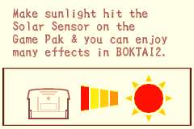
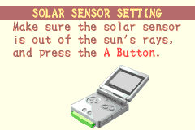

Boktai 2 - Solar Boy Django (USA)
Stateless / Passcode ⏰ Real-Time Clock (RTC) ☀️ Solar Sensor 📺 Joybus 💾 MultiBoot 🎮 4P Link 📡 Wireless
Cartridge Identity
- Game Code
U32E(FamilyU32)- Header Title
BOKTAI2- Maker / Revision
A4/ rev0- ROM Size
- 16.0 MiB (16,777,216 B)
- Save Media
None / Unknown- SHA-256
b51b6c667f4ff78f2e1462f8280af2e96e55fe872efdc85ecfc152f7c34e2483
Screenshots


Cartridge Hardware & Physical Peripherals
This cartridge PCB features physical hardware peripherals: ⏰ Real-Time Clock (RTC) ☀️ Solar Sensor.
Detailed register specifications, GPIO pinouts, and hardware architecture are available in the Cartridge Hardware Reference.
- RTC SDK Signature
SIIRTC_V001at offset0x5a3998- Cartridge GPIO Port
0x080000C4(GPIO_PORT_DIRECTION) · 4 load instruction references in code- Cartridge GPIO Port
0x080000C6(GPIO_PORT_DATA) · 4 load instruction references in code- Cartridge GPIO Port
0x080000C8(GPIO_PORT_CONTROL) · 4 load instruction references in code- Solar Sensor Interface
photodiode_adc_solar_sensoroncartridge_gpio_bit3via0x080000C4,0x080000C6,0x080000C8· Context string:SOLAR SENSORat0xca0fe4
Niche & Rare Accessories
Detected niche/rare GBA accessory support: 🔌 Wireless Adapter (RFU_V1024).
Full 343-ROM corpus breakdown in the Cartridge Hardware & Niche Accessories Reference · auto-detected from ROM bytes via
gbakit inspect.
- Wireless Adapter (RFU_V1024)
- Nintendo Wireless Adapter (
AGB-015) SDKRFU_V1024+RFU-MBOOT
Link Cable & Multiplayer Communications
This title contains detected communication capabilities: 📺 Joybus 💾 MultiBoot 🎮 4P Link 📡 Wireless.
Detailed protocol specifications, SIO registers, Joybus commands, and MultiBoot sequences are documented in the Link & Multiplayer Reference.
- Multi-Player SIO (4P)
- 16-bit ring network · SIOCNT (
0x04000128) literals:0x238360,0x238430,0x23848c· SIODATA32/SIOMULTI0 (0x04000120) literals:0x23852c,0x238f78,0x248b70 - GameCube Joybus
- Register literal
REG_JOYCNT(0x04000140) at offset0x7a6eec - GameCube Joybus
- RCNT mode literal
0x0000c304(mode0xC000) at offset0x23dad4(RCNT literal at0x23dad0) - Nintendo Wireless Adapter
- AGB-015 RFU driver signature
RFU_V1024at offset0x5a3928 - Nintendo Wireless Adapter
- AGB-015 RFU driver signature
RFU-MBOOTat offset0x5a3934 - Nintendo Wireless Adapter
- AGB-015 RFU driver signature
NINTENDOSio32IDat offset0x5a3940 - Single-Cart MultiBoot
- Single-Cartridge MultiBoot (Download Play) client/server handler · Thumb SWI 0x25 (
0xDF25):0x262e3c,0x29f868,0x312cc8,0x3276c0· SDK signatures:MBOOTat0x5a3938
Cartridge Storage Architecture: Stateless / Passcode
Zero non-volatile battery hardware: This cartridge PCB contains ROM only (no SRAM, Flash, or EEPROM chips). Progression is preserved via on-screen passcodes or session-only gameplay. No
.sav file is generated or required.
Text, Fonts & Scene Data
- Primary Text Encoding
- Plain ASCII (uncompressed) (
5,874ASCII strings ·3Shift-JIS runs) - Font & VWF Indicators
- VWF Width Table 1bpp Font · BIOS SWIs: BitUnPack
0x10:0· LZ770x11/12:0· Huffman0x13:0· RLE0x14/15:2 - Scene & Packaging
74ROM pointer tables (≥32 entries,0≥200) ·33relativeu32TOCs ·276OAM metasprite hits
Password System
- Save Media
- Battery-Backed (EEPROM)
- Password Class
- Vowel-Free Alphabet Encoded (
vowelfree_alphabet_encoded) - Detected Alphabet
BCDFGHJKLMNPQRSTVWXYZ@0xce4441- Password UI Strings
password
Regional Variants & Revisions (Family U32)
- Boktai 2 - Solar Boy Django (Europe) (En,Fr,De,Es,It) (
U32P, 16 MiB) - Zoku Bokura no Taiyou - Taiyou Shounen Django (Japan) (
U32J, 16 MiB) - Zoku Bokura no Taiyou - Taiyou Shounen Django (Japan) (Rev 1) (
U32J, 16 MiB)